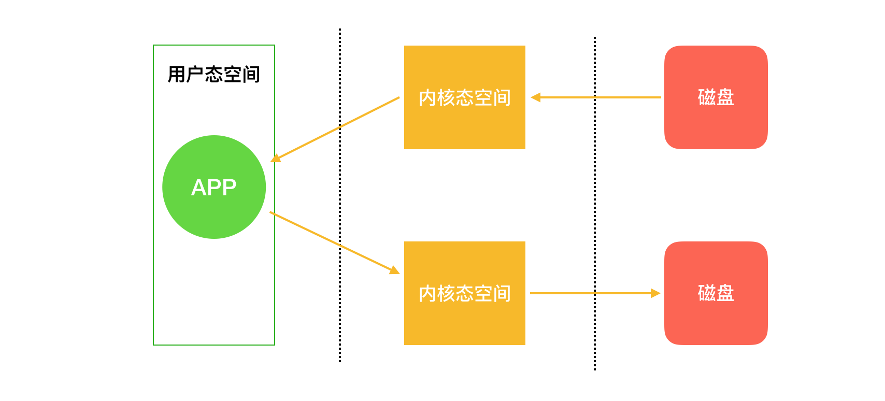
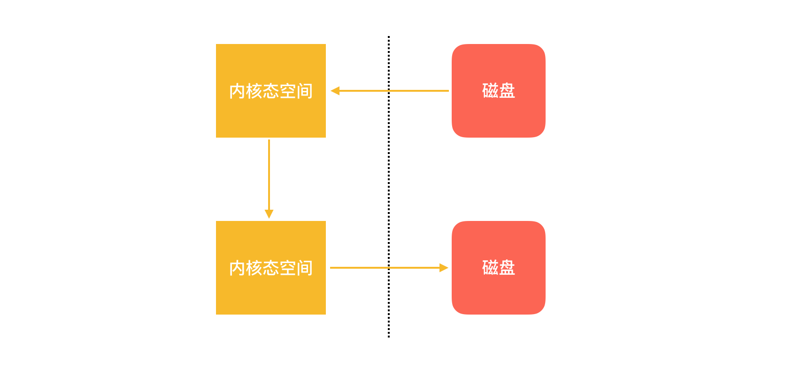

零拷贝为什么这么快
文件拷贝是一个很常见的需求，无论是在程序中，还是日常使用计算机。在 Java 中，经常需要实现文件拷贝，而且有一种叫做零拷贝的技术，拷贝文件的效率非常高，在这篇文章中，我来来看一下零拷贝技术是怎么实现的。
文件拷贝
Java 中文件拷贝的方式有很多种：
- 使用 java.io 中的 FileInputStream 和 FileOutputStream
- 使用 java.nio 中的 transferTo 或者 transferFrom
- Files.copy() 方法
- apache.common 中的 FileUtils.copyFile() 方法
使用 java.io
File originFile = new File("originFile.txt");
File copyFile = new File("copyFile.txt");
try (
FileInputStream fis = new FileInputStream(originFile);
FileOutputStream fos = new FileOutputStream(copyFile);){
byte[] data = new byte[1024];
int len = 0;
while ((len = fis.read(data)) != -1) {
fos.write(data, 0, len);
}
} catch (IOException e) {
e.printStackTrace();
}
使用 java.nio
File originFile = new File("originFile.txt");
File copyFile = new File("copyFile.txt");
try (FileInputStream fis = new FileInputStream(originFile);
FileOutputStream fos = new FileOutputStream(copyFile);) {
FileChannel inChannel = fis.getChannel();
FileChannel outChannel = fos.getChannel();
inChannel.transferTo(0, inChannel.size(), outChannel);
} catch (IOException e) {
System.out.println(e);
}
而 Files.copy() 和 apache.common.FileUtils.copyFile() 则就是在这两种方式的基础上实现的。
Files.copy() 的实现要复杂一些，在不同的操作系统上有不同的实现，可以认为是本地实现的用户态空间拷贝，用户态空间的概念下面会说到。
Files.copy() 的可以理解为 java.io 中的实现，没有太大的差别。
apache.common 中的 FileUtils.copyFile() 就是使用 NIO 中 transferFrom 来实现:
try (FileInputStream fis = new FileInputStream(srcFile);
FileChannel input = fis.getChannel();
FileOutputStream fos = new FileOutputStream(destFile);
FileChannel output = fos.getChannel()) {
final long size = input.size();
long pos = 0;
long count = 0;
while (pos < size) {
final long remain = size - pos;
count = remain > FILE_COPY_BUFFER_SIZE ? FILE_COPY_BUFFER_SIZE : remain;
final long bytesCopied = output.transferFrom(input, pos, count);
if (bytesCopied == 0) {
break;
}
pos += bytesCopied;
}
}
所以在 Java 中，实现文件复制的方法本质上只有两种，java.io 和 java.nio，那么这两种方式有什么区别呢？
在我 2015 年的 i5 8G 内存的 MacBook pro 上，用两种方式分别拷贝一个 12M 的 txt 文件， 5 次耗时（ms）如下：
| java.io | java.nio | |
|---|---|---|
| 1 | 161 | 45 |
| 2 | 193 | 29 |
| 3 | 179 | 31 |
| 4 | 185 | 35 |
| 5 | 145 | 53 |
从上面的测试可以发现，使用 java.io 和 java.nio 来进行文件拷贝有着很大的性能差异，java.nio 占据绝对的优势。
零拷贝技术
如果要搞清楚这种差异，就需要了解操作系统中的用户态空间和内核态空间。
现代的操作系统中会将虚拟内存分成内核态空间和用户态空间两个部分，这样的划分方式是为了保护计算机不被恶意软件软件破坏。内核态空间中主要运行系统优先级比较高的应用，比如系统内核，硬件驱动等，而用户态空间中则主要运行普通的应用软件。
那么上面文件拷贝的例子和系统的用户态和内核态有什么关系？
我们都知道文件是存储在磁盘上的，如果我们要把文件从磁盘的一个位置拷贝到磁盘的另一个位置，是先需要将文件读取到计算机的内存当中，然后再把内存中的文件写入到指定的磁盘位置，这样才能完成拷贝。
而计算机的内存并不是一整块，而是分成了上面我们所说的用户态空间和内核态空间，java.io 和 java.nio 在文件拷贝过程中，对这些空间的使用方式不同，具体的区别如下。
如果我们使用 java.io 中的输入流来读取文件，那么整个过程是下面这样的：

文件从磁盘读到内核态空间再读到用户空间的每一次切换过程都叫上下文切换，所以整个过程就是涉及到 4 次上下文切换。
而使用 java.nio 则是这样的：

nio 的文件拷贝直接在内核态完成，整个过程仅仅需要 2 次上下文切换，所以就节省了很多时间，这个技术也称之为零拷贝。
使用零拷贝技术来拷贝文件不需要用户态的参与，每一次拷贝过程都节省了两次上下文切换和拷贝内存的占用。